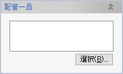
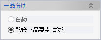
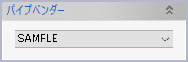

配管一品図
配管一品図
あらかじめ作成しておいた図面テンプレートを利用して、パイプ要素から一品図を作成します。コマンドを実行すると、一品ごとに1つの図面シートが作成されます。 図面シートは新規図面ドキュメントもしくは図面ファイルを作成してそこに追加することもできますし、パイプ要素と同じ３Ｄモデルドキュメント内に作成することもできます。
このヘルプでは、一品図の作成に必要なテンプレートファイルの作成方法についても解説します。またEvo.Shipにはサンプルテンプレートが付属しています。
操作方法
一品図を作成するパイプ要素とテンプレートファイルを選択し、OKボタンをクリックすると図面が作成されます。
通常、図面は
- 投影図
- 切断・曲げ加工指示図（カッチング）
- 部品表
- 接続表
- 表題欄
から構成されます。
- 一品に含まれるパイプ（の中心線）がすべて同一平面上に存在していると、正面図のみが作図されます。パイプが平面上にないときは必要に応じて上面図や側面図が作図されます。
- 投影図のパイプはデフォルメして描画されます。パイプ長さは実長（単位: m）の平方根となり，3D未満のベンド要素は描画されません。
- 部品表の行数よりも部品点数が多いと、一品が複数シートに分かれて出力されます。
パラメータ
- 出力対象要素
一品図に表示される配管要素を指定します。- 選択されている要素
選択リストボックスが表示され、任意の要素を選択できます。
「表示されている要素」もしくは「選択されている要素」を選ぶと、指定した要素を含む一品に属する他の要素はすべて自動的に選択され（コンテキストメニューの「一品単位でパイプを選択」に相当）、一品図の対象となります。そのため、明示的に選択していない要素も図面化されることがあります。 - 配管一品を選択
配管一品選択ダイアログが表示されます。「選択」ボタンをクリックして配管一品要素を選択してください。

- 選択されている要素
- 一品分け

本コマンドは、配管一品分けコマンドにて配管要素を配管一品要素の子要素としてグループ分けしたあとで使うのが一般的ですが、グループ分けされていない配管要素からも一品図を作成することができます。その場合はこの「一品分け」パラメータで「自動」を選択してください。すると、コンテキストメニューで「一品単位でパイプを選択」した場合と同じように、内部で自動的に配管要素を一品単位に分けて図面を作成します。 - 図面方向
図面の投影方向や派生図の有無について、システムが自動で決めることもできますし、ユーザーが指定することもできます。「指定」を選択すると、各種パラメーターが追加で表示されます。
- X/Y軸方向（「図面方向」＝「自動」の場合のみ）
要素を選択して方向を指定すると、その方向が図面のX軸またはY軸方向と一致するように投影図の向きを調整します。これを利用すると、作成した一品図上に、傾斜管など任意の方向に沿った水平・垂直寸法を追加することができます。 - テンプレートファイル
一品図のテンプレートとなる図面ファイル（.evodwgファイル）を指定します。 - 出力先
「このモデル内の新規図面」を選択すると、一品図と配管要素とが関連を持つようになります。このオプションで作成された図面のコンテキストメニューには「図面スケッチの更新」という項目が表示され、クリックすると配管一品図作成以降（または前回の更新以降）の配管要素の変更内容が図面に反映されます。 - 出力単位

「出力先」オプションで「新規図面ドキュメント」または「図面ファイル」を選択した場合は、この「出力単位」オプションで、ひとつのドキュメント（ファイル）に複数の図面シートを含めるのか、あるいはドキュメント（ファイル）ひとつにつき図面シートひとつとするのかを選択できます。 - パイプベンダー

ベンダー設定を選択します。ベンダー設定を変更する際には設定ファイルを書き換えます。ただし「出力先」オプションで「このモデル内の新規図面」を選択した場合は、図面作成時に選択したベンダー設定が図面内に保持され、設定ファイルを書き換えても保持されている設定は更新されません。
- 図面オプション
- ベンド/エルボ角度寸法
- ベンドやエルボの角度寸法形式を選択します。
- 円弧状に作図する曲げ設定名
- 曲げ（ベンド）は通常は折れとして作図しますが、ここで設定した曲げ設定のものについては円弧状で作図します。設定を複数指定する場合は半角空白で区切ってください。
- レジューサ基準点
- レジューサ寸法の基準点を選択します。
中心 
両端 - UP/DOWN長さを表示
- チェックすると、投影方向と平行（＝図面平面に垂直）なパイプの長さを、「UP=XXX」「DN=XXX」の形式で、接続された継手のラベルの下に表示します。
ただし、継ぎ手が派生図のうちいずれかで横から描画されている（＝当該パイプ長さが通常の寸法として表示されている）場合には表示されません。UP/DOWN長さなし UP/DOWN長さあり - フランジに抜き代を表示
- ONにすると、投影図内のフランジのラベルの2行目に抜き代を「-5」のように表示します。
- 投影図の点IDを省略
- ONにすると、接続表の各行に対応する点ID（A、B、C、...）を投影図内に表示しません。
- シンボルサイズ
- パイプ断面直径が指定した長さになるよう、描画される各種シンボルのサイズを調整します。
- 伸ばし量の表記
- 管端に伸ばしが設定されていた場合の表記方法を、点IDの接尾記号を指定長さごとに増やす（「P」→「P*」→「P**」）か、管長の寸法に伸ばし量を追加する（「1500」→「1500＋50」→「1500＋100」）かのいずれかより選択します。
- カッチングの表示
切断・曲げ加工指示図（カッチング）に関するパラメータです。
- 表示対象管材
- 表示されるパイプを、余分な曲げつかみ代や伸ばしなどの切り代のあるものだけに限定するか、それともすべてのパイプを表示するのかを選択します。
- ベンド注記
- 曲げ部に追加で表示される注記の内容を、曲げ角または任意のテキストから選択します。
- 部品表オプション
- 部品表の管材の扱い
- 「同一管種はまとめて1部品」とすると、「長さ」「重量」「曲げ」以外の属性が一致する管については、複数をまとめてひとつの部品として表に出力します。
- エルボは未カット角度で集計
- チェックすると、カッティングエルボをカット前の角度（45°/90°/180°のいずれか）の部品として集計します。
- 更新時の新規要素色
更新時の変更要素色
更新時の削除要素色
一品図を関連性ありで作成する際には、「図面スケッチの更新」実行時に更新されたスケッチ要素や削除された（とみなされる）スケッチ要素の色を指定した色に自動的に変更することができます。- 要素の色を元に戻すには、図面のコンテキストメニューで「図面スケッチの更新色をリセット」をクリックします。
- 「更新時の削除要素」色に変更されたスケッチ要素は、同時に「UPDATE-ERROR」という名前のレイヤーに移動されます。
- 投影図スタイル設定
一品図内の投影図の注記スタイルを指定します。注記スタイルはあらかじめ「注記スタイルの管理」コマンドで作成しておく必要があります。注記スタイルを指定しなければテンプレート図面のスタイルがそのまま使われます。
テンプレートファイル
配管一品図コマンドではテンプレートファイルを利用して
- 投影図の描画領域
- 曲げ加工指示図の描画位置
- 部品表の表示項目
- 接続表の表示項目
- 表題欄の表示項目
を指定します。
投影図の描画領域
「PROJECTION_DWG」というレイヤー内のスケッチカーブで投影図の描画領域を指定します。領域はカーブに外接する長方形となります。カーブは非表示でもかまいません。
曲げ加工指示図の描画位置
「BENT_PIECE_DWG」というレイヤー内のスケッチカーブで投影図の描画位置を指定します。カーブに外接する長方形の左下が指示図の左下となります。カーブは非表示でもかまいません。
部品表の表示項目
部品表は「ITEM_ROW_DEF」というレイヤーで一行の内容を定義し、「ITEM_ROW_#1,2,3,...」というレイヤーで各行の配置される位置を指定します。
「ITEM_ROW_DEF」レイヤーには、表示したい属性を示す注記と、配置の基準位置を示すスケッチカーブとを含めるようにします。スケッチカーブの左下（×印で示した点）が基準位置となります。
表示可能な属性は下記の通りです。末尾に《系統》と書いてある属性については、「配管系統リストの読込」コマンドによって配管系統に割り当てた値を読み取って表示します。ただし、個々の配管要素、あるいは配管一品にもにも値が割り当てられていた場合は、そちらを優先します（優先順位は 配管要素 → 配管一品 → 配管系統）。
- 「数量」サイズや材質などから同じ部品とみなせるものが複数あった場合は一行にまとめられ、その数量が表示されます
- 「種別」いわゆる要素名です（パイプ，エルボ，フランジ，etc.）
- 「種類」「%GRADE%」管の種類です（SGP、SUS304TP、etc.）。《系統》
- 「呼び径」呼び径の文字列をそのまま表示します。
- 「%NOMINALDIAMETERNOSUFFIX%」呼び径の数字部分だけを表示します。
- 「呼び厚さ」《系統》
- 「%MANUFACTURINGMETHOD%」製管法です。《系統》
- 「仕上げ長」直線上のパイプ同士の仮想交点を基準とした寸法です。
- 「%VERIFICATIONLENGTHSUBTOTAL%」仕上げ長の小計（管1部品の仕上げ長に部品数量をかけたもの）を表示します。
- 「工作長」加工長とも呼ばれます。
- 「%MANUFACTURINGLENGTHSUBTOTAL%」工作長の小計（管1部品の工作長に部品数量をかけたもの）を表示します。
- 「曲げ角」曲げ角度です
- 「曲げ」ベンドRまたはエルボ曲げ設定です
- 「標準部品」フランジの呼び圧力（5K、10K、...）やエルボのショート／ロングの区別などです。
- 「%SLEEVETYPE%」スリーブの種類（中継・貫通・化粧）をそれぞれS、L、Cの文字で表示します。「%SLEEVETYPE:S=中継|L=貫通|C=化粧%」のようにして表示文字を置換することもできます。
- 「%CONNECTIONPARTCODE%」接続表の「部品記号」に相当する文字を表示します。
- 「%FLANGETYPE%」SOP、SOH、BL、BPLなどのJIS規格のフランジ種類を表示します。「%FLANGETYPE:SOP=FL|BL=BFL%」のようにして表示文字を置換することもできます。
- 「重量」単位はkgです。
- 「%WEIGHTSUBTOTAL%」重量の小計（部品の単品重量に部品数量をかけたもの）を表示します。
- 「諸元」その他部品種別固有の属性を出力します（現在はスリーブのタイプとフランジの抜き代が表示されます）
- 「@装置区分」「@系統番号」「@管番号」「@区画情報」「@規格」「@製管法」名前を指定できる配管属性については、このように先頭に「@」をつけて属性名を記述することで対象の属性を表示できます。この記述方法で表示対象となるのは個々の配管要素に割り当てた属性だけで、配管系統属性は表示されません。
- 「%CONNECTIONSPAN%」投影図や接続表に表示される接続記号（A、B、C、...）のうち、部品表の項目に該当するものを表示します。
「ITEM_ROW_#1,2,3,...」というレイヤーには、各行を配置する位置の基準を示すスケッチカーブを含めます。スケッチカーブの左下（×印で示した点）が基準位置となります。
「ITEM_ROW_DEF」レイヤー内のスケッチカーブと注記はすべて「ITEM_ROW_#1,2,3,...」レイヤーの位置にコピーされます。上の画像のように「ITEM_ROW_#1」レイヤーを省略すると「ITEM_ROW_DEF」レイヤーの内容がそのままの位置に配置されます。
管材と金物とで部品表を分ける
部品表は複数配置することができます。また、それぞれに掲載する要素について「管材のみ」「金物のみ」といった指定が可能です。
部品表を複数配置するには、行内容定義レイヤーとして「#1_ITEM_ROW_DEF」「#2_ITEM_ROW_DEF」というように、標準のレイヤー名「ITEM_ROW_DEF」の先頭に「#番号_」をつけた名前のレイヤーを用意してください。行位置定義レイヤーについても同様に「#1_ITEM_ROW_#1」「#1_ITEM_ROW_#2」（ひとつ目の表の行位置定義）、「#2_ITEM_ROW_#1」「#2_ITEM_ROW_#2」(ふたつ目の表の行位置定義）といったレイヤーを用意してください。
表に掲載する要素の種類は、行内容定義レイヤー内に配置した注記で指定します。注記テキストの形式は「$ITEMTYPES=[要素種別]」です。[要素種別]には以下の9種類を指定できます。
- PIPE
- ELBOW
- REDUCER
- FLANGE
- SLEEVE
- TEE
- SOCKET
- EQUIPMENT
- ALL（上記すべてに相当）
要素種別は+プラスや-マイナス記号を使って複数指定することができます。
- 例1：$ITEMTYPES=FLANGE+SLEEVE ←部品表にフランジとスリーブ要素を含める
- 例2：$ITEMTYPES=ALL-EQUIPMENT ←部品表に配管機器以外の要素を含める
なお、管材のみ（$ITEMTYPES=PIPE）あるいは金物のみ（$ITEMTYPES=ALL-PIPE）の部品表については、以下の表のように専用のレイヤー名を用意してあります。これらのレイヤー名を使う場合は、$ITEMTYPESによる要素種別指定は無視されます。
| レイヤー種別 | 標準の部品表 | 管材のみ | 金物のみ |
|---|---|---|---|
| 内容定義 | ITEM_ROW_DEF | PIPE_ITEM_ROW_DEF | JOINT_ITEM_ROW_DEF |
| 行位置定義 | ITEM_ROW_#1, 2, 3, ... | PIPE_ITEM_ROW_#1, 2, 3, ... | JOINT_ITEM_ROW_#1, 2, 3, ... |
接続表の表示項目
接続表は「CONNECTION_ROW_DEF」というレイヤーで一行の内容を定義し、「CONNECTION_ROW_#1,2,3,...」というレイヤーで各行の配置される位置を指定します。
「CONNECTION_ROW_DEF」レイヤーには、表示したい属性を示す注記と、配置の基準位置を示すスケッチカーブとを含めるようにします。スケッチカーブの左下（×印で示した点）が基準位置となります。
表示可能な属性は下記の通りです。
- 「区間」一品図では配管の加工点あるいは部品の芯にAから始まる識別子が自動的に接続順に割り振られますが、これらの識別子をふたつ組み合わせた区間名（例：AB、BC、BDなど）が表示されます。
- 「部品記号」加工法や部品種類に応じた英数字の短い記号です。
- 「部品説明」標準部品名や枝管の外径などが表示されます。
- 「仕上長」
- 「工作長」
- 「%ENDEXCESS%」当該管端に設定した現場合わせの伸ばし量です。
- 「%FLANGEWELDOFFSET%」フランジの抜き代です。
- 「直管穴廻」
- 「前曲げ穴振り」A→B→Cの順に曲げ加工する際の穴振り角度です。
- 「曲げ角」
- 「後曲げ穴振り」C→B→Aの順に曲げ加工する際の穴振り角度です。
- 「%DELTAX%」「%DELTAY%」「%DELTAZ%」外形ワタリ寸法（ひとつ前の接続点からの座標値差分）です。
図面に属性を表示するためのテキストのうち、%記号で囲まれたものは、ひとつの注記要素中に複数記述したり、属性と関係のない文字と混ぜて使ったりできます。たとえばテンプレート図面中に、テキストを「X=%DELTAX%/Y=%DELTAY%/Z=%DELTAZ%」とした注記を作成しておけば、一品図では「X=200/Y=0/Z=300」といった内容のテキストをもつ注記が表示されます。
「CONNECTION_ROW_#1,2,3,...」というレイヤーには、各行を配置する位置の基準を示すスケッチカーブを含めます。スケッチカーブの左下が基準位置となります。「CONNECTION_ROW_DEF」レイヤー内のスケッチカーブと注記はすべて「CONNECTION_ROW_#1,2,3,...」レイヤーの位置にコピーされます。「CONNECTION_ROW_#1」レイヤーを省略すると「CONNECTION_ROW_DEF」レイヤーの内容がそのままの位置に配置されます。
表題欄の表示項目
表題欄に表示するような図面全体の属性は、「DWG_ATTRIBUTES」レイヤーに注記テキストを配置して指定します。指定可能な項目は下記の通りです。
- 「%SHIPNAME%」番船名です。番船名として使われるのはモデル構成ウィンドウ内ツリーのルート項目の名前です。
- 「フレーム」フレーム範囲とP/Sが表示されます
- 「区画」
- 「系統」
- 「連番」配管一品分けで指定した一品の通し番号です
- 「重量」単位はkgです。重量が未設定の管・継手が含まれていると、「20.5+」のように数字のうしろに「＋」が表示されます。
- 「表面処理」《系統》
- 「%SURFACETREATMENT%」《系統》表示対象の値は「表面処理」と同じですが、こちらの書式を使用すると実際の値とは異なる値に変換して表示することができます。たとえば「%SURFACETREATMENT:値1=文字列1|値2=文字列2%」と指定すると、値1は文字列1に、値2は文字列2に変換されます。
- 「水圧試験」《系統》
- 「曲げ方向」接続表の上から曲げるか（A→Z）下から曲げるか（Z→A）が表示されます
- 「後曲げ」接続表の上端（A）と下端（Z）のうちどちらが後曲げ可能か、AとZで表示されます
- 「%BENDRADIUS%」本管の曲げ半径です。重複Rはまとめて表示され、管径降順に並びます。他にも以下のような指定方法があります。
- 「%MAIN_BENDR_ASC%」本管のみ、重複Rも全て表示、管径昇順
- 「%MAIN_BENDR_DESC%」本管のみ、重複Rも全て表示、管径降順
- 「%MAIN_BENDR_UNIQUE_ASC%」本管のみ、重複Rはまとめて表示、管径昇順
- 「%MAIN_BENDR_UNIQUE_DESC%」本管のみ、重複Rはまとめて表示、管径降順
- 「%BENDR_ASC%」本管＋枝管、重複Rも全て表示、管径昇順
- 「%BENDR_DESC%」本管＋枝管、重複Rも全て表示、管径降順
- 「%BENDR_UNIQUE_ASC%」本管＋枝管、重複Rはまとめて表示、管径昇順
- 「%BENDR_UNIQUE_DESC%」本管＋枝管、重複Rはまとめて表示、管径降順
- 「%LEVELOFCOMPLETION%」仕上げ区分です。既定の値は以下のいずれかとなります。
- A（完成管）
- B（半完成管＝継手の仮付あり）
- G（現合管＝伸ばしあり）
- 「%SACRIFICIAL%」犠牲管の一品であることを示します。配管一品分けで「犠牲管」チェックボックスをONにしておくと、このテキストが「SP」に置換されます。「SP」以外の文字にしたい場合は「%SACRIFICIAL:SP=○%」のように指定します。
- 「%PRODUCTIONCOUNT%」配管一品分けで指定した製作数です。
- 「図面番号」1から始まる続き番号、一品が複数シートにまたがった場合は「1-1」「1-2」と表示されます
出力された図面
投影図には自動的に寸法が表示されます。精度や単位表示などはテンプレート図面ドキュメントの寸法値設定または投影図スタイル（指定した場合）に基づいて出力されます。またこれらの寸法は、投影図内の基準点（仮想交点）に表示された黒点を参照して作られています。投影図に寸法を追加する際、この黒点を選択せずに、デフォルメされたスケッチ線を選んでしまうと、パイプ長さとは異なる値の寸法が作成されますのでご注意ください。
この黒点は3Dモデルにおける位置情報を保持しており、寸法コマンドを起動してピックしようとすると、このように3D空間における(X,Y,Z)座標と図面空間におけるZ値とが表示されます。
2点目も同じように黒点を選択してください。
このように正しい長さの寸法が作成できます。なおZ値の異なる2点を選ぶと、2点間の3D空間内距離ではなく、図面平面上での2D距離が寸法値として表示されます。